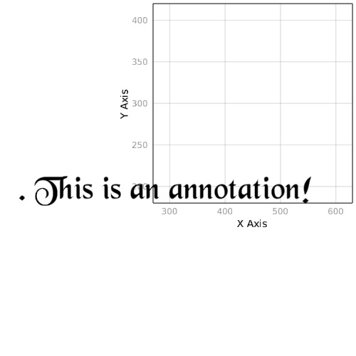
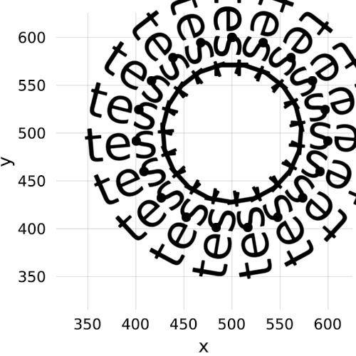
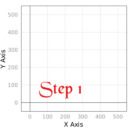

text
Text Annotation
Tags: 2d, align, annotation, text.
using Makie
text(
". This is an annotation!",
position = (300, 200),
align = (:center, :center),
textsize = 60,
font = "Blackchancery"
)

Text rotation
Tags: 2d, rotation, text.
using Makie
scene = Scene()
pos = (500, 500)
posis = Point2f0[]
for r in range(0, stop = 2pi, length = 20)
global pos, posis
p = pos .+ (sin(r)*100.0, cos(r) * 100)
push!(posis, p)
t = text!(
scene, "test",
position = p,
textsize = 50,
rotation = 1.5pi - r,
align = (:center, :center)
)
end
scatter!(scene, posis, markersize = 10)

Mouse Hover
Tags: hover, interaction, lift, lines, on, poly, popup, record_events, text, translate.
using Makie
using Colors, Observables
r = range(0, stop=5pi, length=100)
scene = Scene(resolution = (500, 500))
lines!(scene, r, sin.(r), linewidth = 3)
lineplot = scene[end]
visible = node(:visible, false)
poprect = lift(scene.events.mouseposition) do mp
FRect((mp .+ 5), 250, 40)
end
textpos = lift(scene.events.mouseposition) do mp
Vec3f0((mp .+ 5 .+ (250/2, 40 / 2))..., 120)
end
popup = poly!(campixel(scene), poprect, raw = true, color = :white, strokewidth = 2, strokecolor = :black, visible = visible)
rect = popup[end]
translate!(rect, Vec3f0(0, 0, 100))
text!(popup, "( 0.000, 0.000)", textsize = 30, position = textpos, color = :darkred, align = (:center, :center), raw = true, visible = visible)
text_field = popup[end]
scene
x = Node(false)
on(scene.events.mouseposition) do event
plot, idx = Makie.mouse_selection(scene)
if plot == lineplot && idx > 0
visible[] = true
text_field[1] = sprint(io-> print(io, round.(Float64.(Tuple(lineplot[1][][idx])), digits = 3)))
else
visible[] = false
end
return
end
RecordEvents(scene, "./docs/media/mouse_hover")
Stepper demo
Tags: annotation, documentation, stepper, text.
using Makie
function stepper_demo()
scene = Scene()
pos = (50, 50)
steps = ["Step 1", "Step 2", "Step 3"]
colors = AbstractPlotting.to_colormap(:Set1, length(steps))
lines!(scene, Rect(0,0,500,500), linewidth = 0.0001)
# initialize the stepper and give it an output destination
st = Stepper(scene, "./docs/media/stepper_demo")
for i = 1:length(steps)
text!(
scene,
steps[i],
position = pos,
align = (:left, :bottom),
textsize = 100,
font = "Blackchancery",
color = colors[i],
scale_plot = false
)
pos = pos .+ 100
step!(st) # saves the step and increments the step by one
end
st
end
stepper_demo()
Step 1
" />
Step 2
Step 3